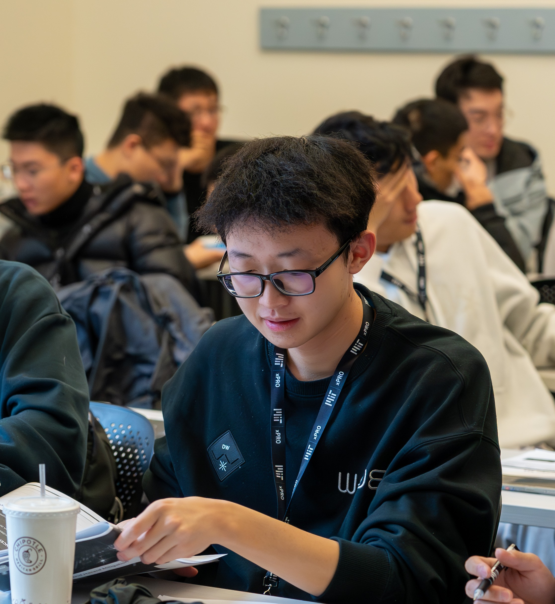
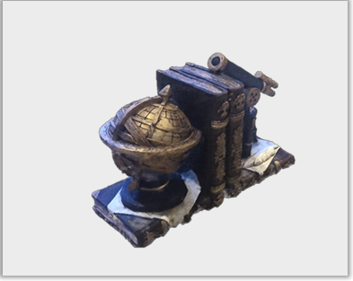
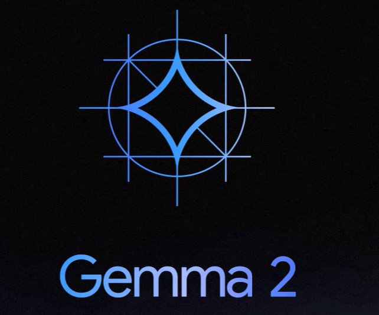

|
Jinrui Zhang I'm a third-year student majoring in Computer Science at University of Electronic Science and Technology of China(UESTC). During my first and second year at college, I've been the senior TA(AI workflow in Games) in Roof Studio, where I've worked on several projects with Tencent, GACmotor and so forth. |
 |
{kind=link}
ResearchMy research interests lie in computer graphics, computer vision, deep learning and generative AI. I am focusing on high quality Neural Representation and 3D reconstruction of the real world objects and high-performance computing/rendering on modern graphics architecture. |
|

|
Opti-Instant-ngp: A Video-to-Mesh Pipeline
Jinrui Zhang, Jiayi Sheng, Mingxiang Bian, Yuhan Li, Changxi Zheng project poster An streamlined approach for turning a video into a 3D mesh that can be rendered in real-time, utilizing Instant-ngp. Ready to use for content creator. |

|
Ray Tracing Renderer with Bare C++
Github A ray tracing renderer without using any Graphics Library. Still supprt translusent materials, multi-resolution rendering and env mapping. |
|
|
Physics-Based OpenGL Renderer
A real-time Physically-Based Rendering pipeline, supporting metallic-roughness workflow and Image-based Lightning. |
|

|
Auto-Verify: A Plug-and-Play Step-wise Verification and Self-Correction Pipeline in Mathematical Reasoning
Preprint A “verify-then-self-correct” pipeline that can be applied to any math reasoning LLM at inference time without additional training. This framework aims to fully harness the model’s step-by-step self-refinement capability, guided by a pretrained verifier that evaluates and explains detected errors to identify and mitigate hallucination at each reasoning step. |